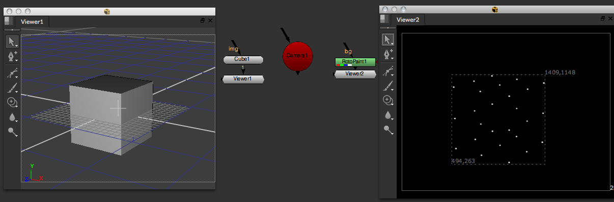

This chapter describes some features of the math module that offer vector and matrix objects and respective functions. A good tutorial can be found on Nukepedia.
This is a rather experimental function that combines ways of reading geometry, getting a camera’s projection matrix, and creating paint strokes. It’s not at all efficient, so only try this on light geometry. The idea is to project 3D points of all objects in the Viewer to screen space (through the currently selected camera) and paint a dot for each using paint strokes. This is not written for production, but rather to demonstrate some of the latest API additions.
Start the new function and call it “paintPoints”. Define the node that provides the geometry (we’ll just grab the current Viewer for that) and a camera (assume a camera node is currently selected)
def paintPoints():
geoNode = nuke.activeViewer().node()
camera = nuke.selectedNode()
Just in case the selected node is not a camera, we let the user know:
if not camera.Class() in ( 'Camera', 'Camera2' ):
nuke.message( 'Please select a camera node first')
return
To gain access to the geometry the current Viewer is connected to, we grab the Viewer’s geo knob and check it for objects:
geoKnob = geoNode['geo']
objs = geoKnob.getGeometry()
if not objs:
nuke.message( 'No geometry found in %s' % geoNode.name() )
To collect the world position of all 3D points, we need to:
loop through all objects
get each object’s world transform
loop through all points in the objects
get each point’s local transform and multiply it by their parent object’s transform matrix to get the point’s world position:
pts = []
for o in objs:
objTransform = o.transform()
for p in o.points():
worldP = objTransform * nuke.math.Vector4( p.x, p.y, p.z, 1 )
pts.append( [worldP.x, worldP.y, worldP.z] )
This collects each 3D point’s world space position in the list pts. Here is the code so far:
def paintPoints():
geoNode = nuke.activeViewer().node()
camera = nuke.selectedNode()
if not camera.Class() in ( 'Camera', 'Camera2' ):
nuke.message( 'Please select a camera node first')
return
geoKnob = geoNode['geo']
objs = geoKnob.getGeometry()
if not objs:
nuke.message( 'No geometry found in %s' % geoNode.name() )
pts = []
for o in objs:
objTransform = o.transform()
for p in o.points():
worldP = objTransform * nuke.math.Vector4(p.x, p.y, p.z, 1)
pts.append( [worldP.x, worldP.y, worldP.z] )
Now we can loop through all the points, calculate their screen positions, and use the RotoPaint node to draw a paint stroke to mark each position. To get to all strokes, shapes, and so on in a Roto or RotoPaint node, we grab its curves knob:
curvesKnob = nuke.createNode( 'RotoPaint' )['curves']
Because we know this may take a while to run, we’d better set up a progress bar:
task = nuke.ProgressTask( 'painting points' )
First, make sure the process can be cancelled via the progress bar and the progress bar is updated with each iteration so you know what’s happening:
for i, pt in enumerate( pts ):
if task.isCancelled():
break
task.setMessage( 'painting point %s' % i )
Then, create a paint stroke object for each point and assign it to the RotoPaint node’s curves knob:
stroke = nuke.rotopaint.Stroke( curvesKnob )
To get the point’s position in screen space, we can use the nukescripts.snap3d module, which does a lot of that kind of work for us:
pos= nukescripts.snap3d.projectPoint( camera, pt )
Note
For other handy 3D functions that deal with projecting points or point selections, have a closer look at the snap3d.py file inside the nukescripts folder that ships with NUKE.
To assign the newly-found screen position to a paint stroke, we need to first create an AnimationControlPoint, which defines the position of a control point:
ctrlPoint = nuke.rotopaint.AnimControlPoint( pos )
Now, let’s append the new control point to the new stroke:
stroke.append( ctrlPoint )
We also need to append it to the root layer in the RotoPaint node:
curvesKnob.rootLayer.append( stroke )
Finally, we update the progress bar we created earlier:
task.setProgress( int( float(i)/len(pts)*100 ) )
Here is the final code:
import nuke
import nukescripts
def paintPoints():
'''
Rather experimental but kinda fun. This projects sleected 3D points through a camera ito screen space
and draws a dot for each using a paint stroke.
'''
# GET THE GEO NODE FROM THE CURRENTLY ACTIVE VIEWER
geoNode = nuke.activeViewer().node()
# WE EXPECT A CAMERA TO BE SELECTED
camera = nuke.selectedNode()
if not camera.Class() in ( 'Camera', 'Camera2' ):
nuke.message( 'Please select a camera node first')
return
# COLLECT ALL OBJECTS IN THE CURRENT GEO KNOB. QUIT IFNONE WERE FOUND
geoKnob = geoNode['geo']
objs = geoKnob.getGeometry()
if not objs:
nuke.message( 'No geometry found in %s' % geoNode.name() )
pts = []
for o in objs:
# CYCLE THROUGH ALL OBJECTS
objTransform = o.transform()
for p in o.points():
# CYCLE THROUGH ALL POINTS OF CURRENT OBJECT
worldP = objTransform * nuke.math.Vector4(p.x, p.y, p.z, 1)
pts.append( [worldP.x, worldP.y, worldP.z] )
# CREATE THE NODE THAT WILL HOLD THE PAINT STROKES
curvesKnob = nuke.createNode( 'RotoPaint' )['curves']
# PREP THE TASK BAR
task = nuke.ProgressTask( 'painting points' )
for i, pt in enumerate( pts ):
if task.isCancelled():
break
task.setMessage( 'painting point %s' % i )
# CREATE A NEW STROKE
stroke = nuke.rotopaint.Stroke( curvesKnob )
# PROJECT THE POINT TO SCREEN SPACE
pos = nukescripts.snap3d.projectPoint( camera, pt )
# CREATE ANE CONTROL POINT FOR
ctrlPoint = nuke.rotopaint.AnimControlPoint( pos )
# ASSIGN IT TO THE STROKE
stroke.append( ctrlPoint )
# ASSIGN TH E STROKE TO THE ROOT LAYER
curvesKnob.rootLayer.append( stroke )
# UPDARE PROGRESS BAR
task.setProgress( int( float(i)/len(pts)*100 ) )